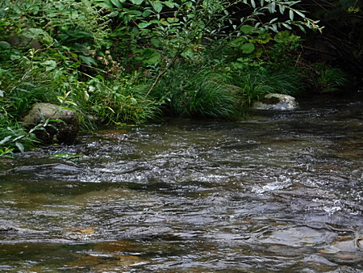
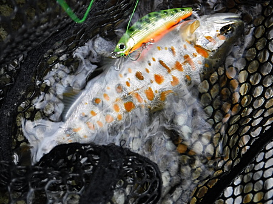
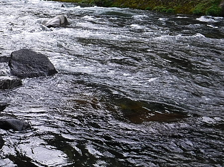
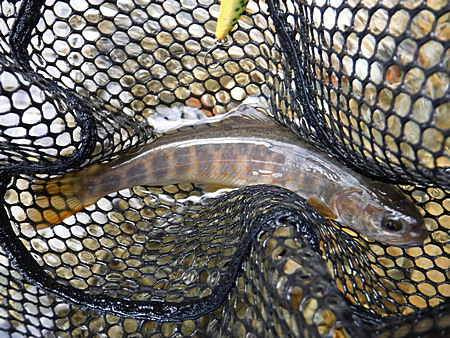
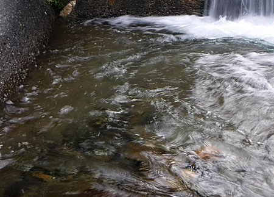
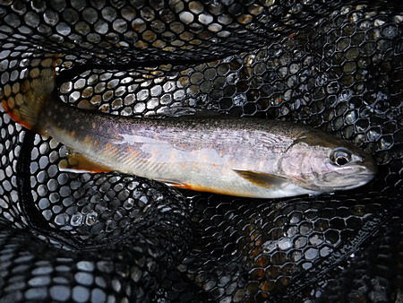
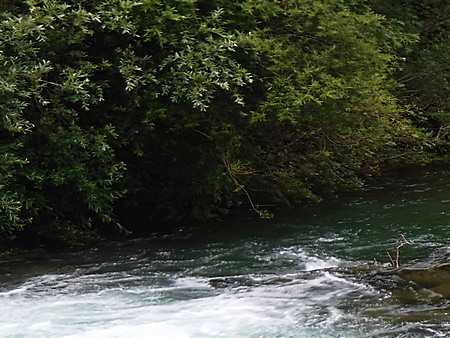

釣行日誌 故郷編
2019/09/01 秋の足音
今日も今日とて、叔父といつもの川へ。朝６時に迎えに来てくれて、出発。
例のごとく、いつもの街道沿いのコンビニでお弁当と入漁券を買って、ひた走る。
入渓を予定していた場所には名古屋ナンバーの四駆が停めてある。
『これは、アカン.....』
しばらく歩いて、だいぶ上流の橋詰から川岸に降りて釣り下る。先行者の足跡があった。今朝一番で入ったのかな？
やはり、なかなか魚が出ない。対岸の藪下、ポケットから見事な放流物のアマゴ。朱点がケバケバしい。花魁の衣装みたいである。


それは良いとして、サイズがミノーの倍くらいしかないのが悲しい
大きな堰堤の下でアマゴ、岩魚がルアーを追って来るのが見えた。その中の良型がスピナーにアタックして咥えそこなった。あるいは見切られたか？ ミノーに替えてみるが食わない。後ろ髪を引かれつつ、もうダメだとあきらめて、８月に良い思いをしたポイントをもう一度せめて見る。しかし、無反応。
叔父と合流して、別の川へ移動する。途中、アメリカ製の高級ブランド、ピッカピカの新品のチェストハイウェーダーを履いた餌釣りの３人組を見かける。餌釣りの人が Simms を履いているのは珍しいなぁ.....と思いつつ通り過ぎる。なぜか３人とも、もう一人の釣り人が竿を出している姿をじっと眺めている。みな、最近渓流釣りを始めた人たちなのだろうか？
馬小屋の区間から入り、しつこく攻めてみるが、ちびっ子イワナが１尾だけだった。


あまりにも魚の気配が少ないので、あまり人の入っていなさそうな中間区間へ移動。草ボウボウの林道を叔父のコンパクトカーで進んで行ったら、道の真ん中が高くなっていて、危うくスタックしそうになった。
「こりゃ、このスズキじゃ無理だ。」
ということで引き返し、「爆釣の淵」へ。アタリなし。（笑）
上流の堰堤に移り、またもフローティングミノーをキャスト。落ち込み脇のたるみから２尾小さいのが出た。


しかし、期待していた本命の流れ込みでは出なかった。

帰りがけに１尾追加して、気を良くしていると、遠くでジャンプする 25cm級が見えた。ちょっと手が出ない。悔しかったがそこで納竿として、いつものようにファミレスで叔父とバカ話をしつつ晩ご飯をいただき、帰宅した。
山には秋が来ていた。
釣行日誌 故郷編 目次へ
サイトマップ
ホームへ
お問い合わせ